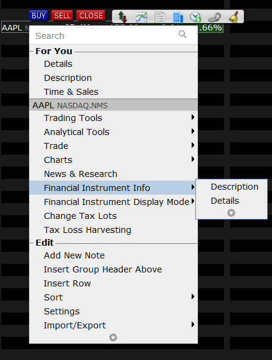
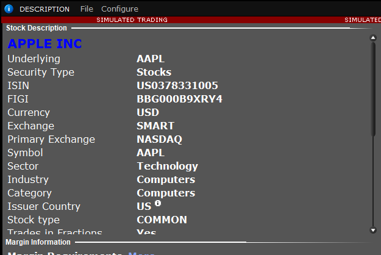

If there is more than one contract matching the same description, TWS will return an error notifying you there is an ambiguity. In these cases the TWS needs further information to narrow down the list of contracts matching the provided description to a single element.
The best way of finding a contract’s description is within TWS itself. Within TWS, you can easily check a contract’s description either by double clicking it or through the Financial Instrument Info -> Description menu, which you access by right-clicking a contract in TWS:

The description will then appear:
Note: you can see the extended contract details by choosing Contract Info -> Details. This option will open a web page showing all available information on the contract.

Whenever a contract description is provided via the TWS API, the TWS will try to match the given description to a single contract. This mechanism allows for great flexibility since it gives the possibility to define the same contract in multiple ways.
The simplest way to define a contract is by providing its symbol, security type, currency, exchange, and primary exchange. The vast majority of stocks, CFDs, Indexes or FX pairs can be uniquely defined through these four attributes. More complex contracts such as options and futures require some extra information due to their nature. Below are several examples for different types of instruments.